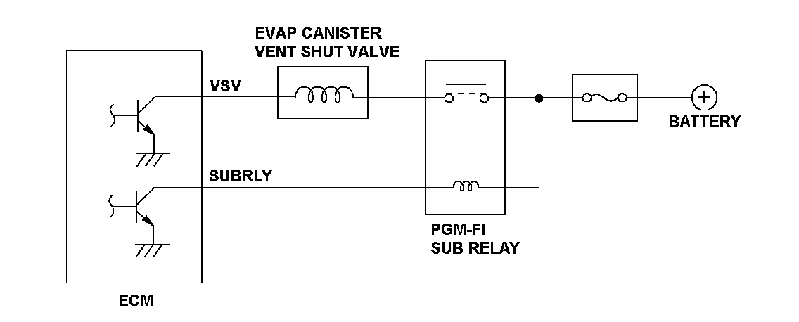
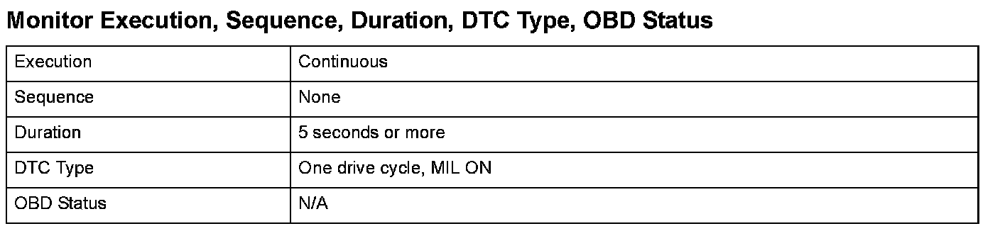
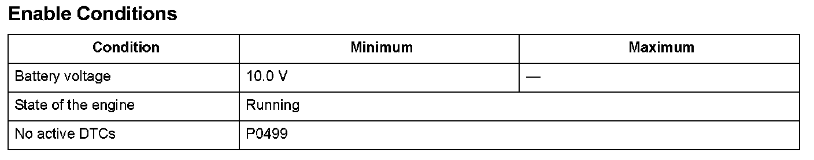

Advanced Diagnostics
DTC P0498: Evaporative Emission (EVAP) Canister Vent Shut Valve Circuit Low Voltage
General Description
The evaporative emission (EVAP) canister vent shut valve is attached to the EVAP canister to control the venting EVAP canister to atmosphere.
The EVAP canister vent shut valve is open (open to atmosphere) when the VSV signal is OFF.
If the return signal is OFF when the engine control module (ECM) outputs the ON signal to the EVAP canister v valve, the ECM detects a malfunction and a DTC is stored.

Monitor Execution, Sequence, Duration, DTC Type, OBD Status

Enable Conditions
Malfunction Threshold
The return signal is OFF for at least 5 seconds when the ECM outputs the ON signal to the EVAP canister vent shut valve.
Confirmation Procedure with the HDS
Do the EVAP CVS ON in the INSPECTION MENU with the HDS.
Diagnosis Details
Conditions for illuminating the MIL
When a malfunction is detected, the MIL comes on and the DTC and the freeze frame data are stored in the ECM memory.
Conditions for clearing the MIL
The MIL will be cleared if the malfunction does not recur during three consecutive trips in which the diagnostic runs.
The MIL, the DTC, and the freeze frame data can be cleared by using the scan tool Clear command or by disconnecting the battery.